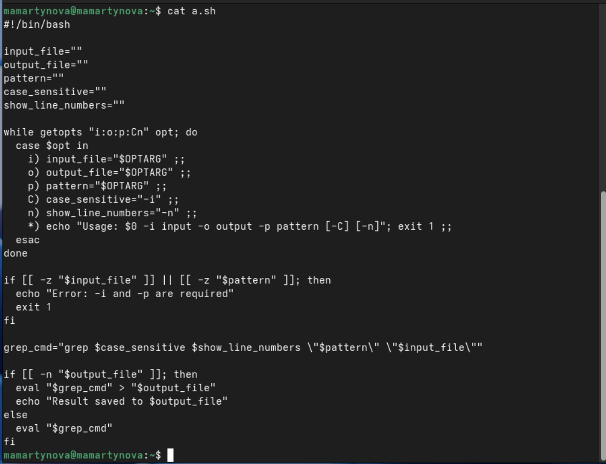
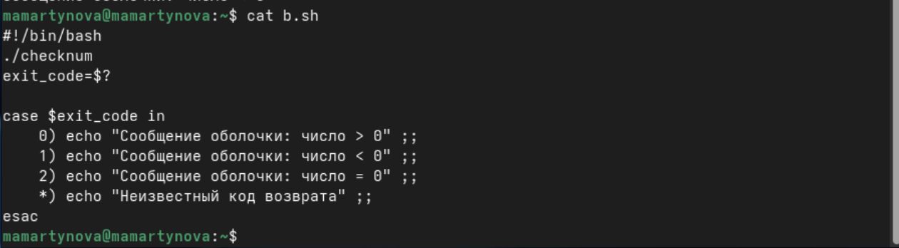
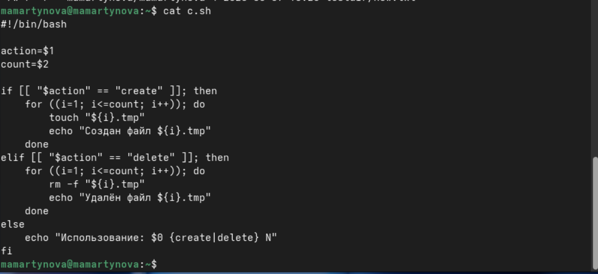
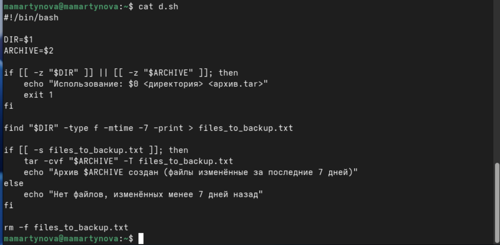
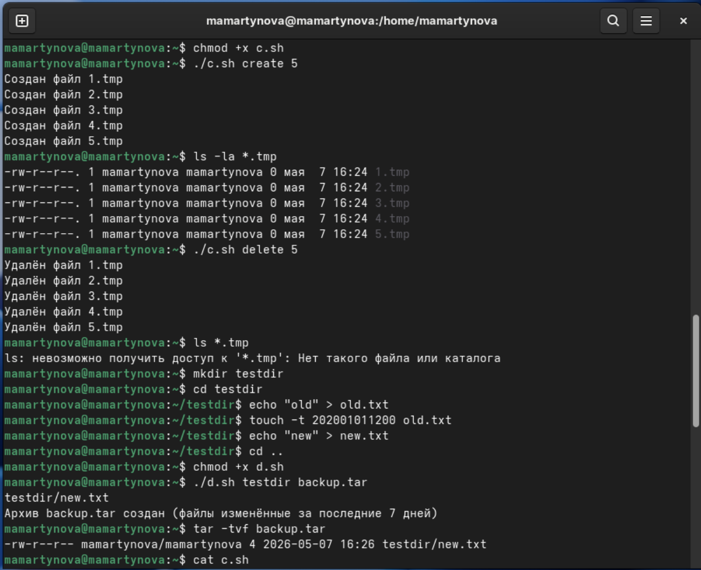

Освоить базовые принципы программирования в оболочке UNIX и научиться
писать сложные сценарии (командные файлы), используя логические
конструкции и циклы.
2. Задание
Используя команды getopts grep, написать командный файл, который
анализирует командную строку с ключами: – -iinputfile — прочитать данные
из указанного файла; – -ooutputfile — вывести данные в указанный файл; –
-pшаблон — указать шаблон для поиска; – -C — различать большие и малые
буквы; – -n — выдавать номера строк. а затем ищет в указанном файле
нужные строки, определяемые ключом -p.
Написать на языке Си программу, которая вводит число и определяет,
является ли оно больше нуля, меньше нуля или равно нулю. Затем программа
завершается с помощью функции exit(n), передавая информацию в о коде
завершения в оболочку. Команд- ный файл должен вызывать эту программу и,
проанализировав с помощью команды $?, выдать сообщение о том, какое
число было введено.
Написать командный файл, создающий указанное число файлов,
пронумерованных последовательно от 1 до 𝑁 (например 1.tmp, 2.tmp,
3.tmp,4.tmp и т.д.). Число файлов, которые необходимо создать,
передаётся в аргументы командной строки. Этот же ко- мандный файл должен
уметь удалять все созданные им файлы (если они существуют).
Написать командный файл, который с помощью команды tar запаковывает
в архив все файлы в указанной директории. Модифицировать его так, чтобы
запаковывались только те файлы, которые были изменены менее недели тому
назад (использовать команду find).
3. Теоретическое введение
Bash — это популярная командная оболочка UNIX, обеспечивающая
интерактивную работу с командами и возможность написания скриптов для
автоматизации. Её ключевые особенности: обработка простых и сложных
команд (конвейеры, перенаправление, if/else, while), удобный ввод с
автодополнением и историей, а также создание исполняемых скриптов с
циклами и функциями. Работает в Unix/Linux и Windows (через WSL).
4. Выполнение лабораторной
работы
Используя команды getopts grep, написать командный файл, который
анализирует командную строку с ключами: – -iinputfile — прочитать данные
из указанного файла; – -ooutputfile — вывести данные в указанный файл; –
-pшаблон — указать шаблон для поиска; – -C — различать большие и малые
буквы; – -n — выдавать номера строк. а затем ищет в указанном файле
нужные строки, определяемые ключом -p.(рис. 1)

Первый скрипт
Написать на языке Си программу, которая вводит число и определяет,
является ли оно больше нуля, меньше нуля или равно нулю. Затем программа
завершается с помощью функции exit(n), передавая информацию в о коде
завершения в оболочку. Команд- ный файл должен вызывать эту программу и,
проанализировав с помощью команды $?, выдать сообщение о том, какое
число было введено.(рис. 2)

Второй скрипт
Написать командный файл, создающий указанное число файлов,
пронумерованных последовательно от 1 до 𝑁 (например 1.tmp, 2.tmp,
3.tmp,4.tmp и т.д.). Число файлов, которые необходимо создать,
передаётся в аргументы командной строки. Этот же ко- мандный файл должен
уметь удалять все созданные им файлы (если они существуют).(рис. 3)

Третий скрипт
Написать командный файл, который с помощью команды tar запаковывает
в архив все файлы в указанной директории. Модифицировать его так, чтобы
запаковывались только те файлы, которые были изменены менее недели тому
назад (использовать команду find). (рис. 4)

Четвертый скрипт
Делаю файлы исполняемыми и запускаю. (рис. 5)

Запуск
5. Выводы
Мы освоили базу программирования в оболочке UNIX и приобрели навыки
написания усложнённых командных скриптов, применяя логические
конструкции и циклы.